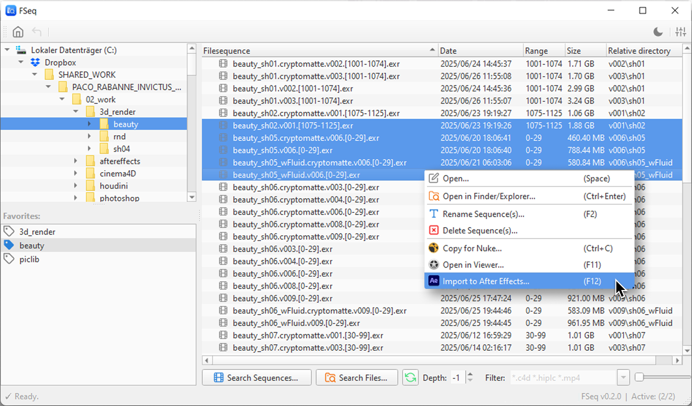
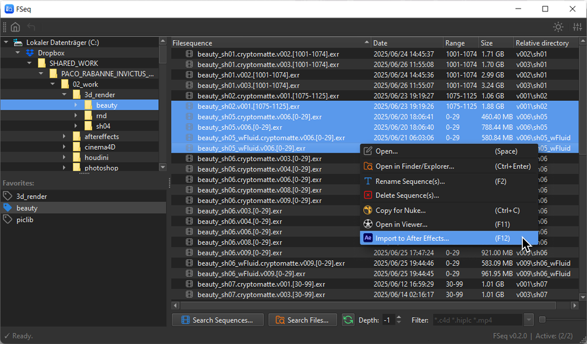
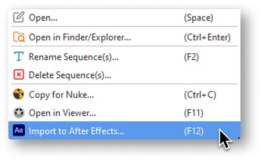
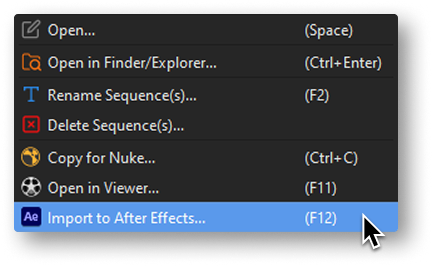
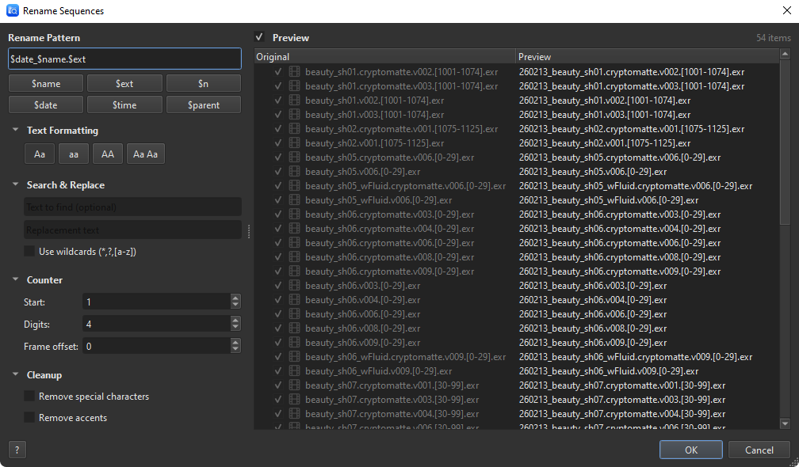

Search through multiple subfolders for image sequences. Detect missing or broken sequences and import/open them directly in your favorite tool.
Imagine you could "google" through your project folders and entire hierarchies...
Search through multiple subfolders for files based on a given filter. e.g. *.c4d, *.hip*


Open files in their standard program, copy/paste sequences into After Effects/Nuke or view directly in your favorite viewer.
FSeq got you covered.

Batch rename your image sequences and files with a powerful pattern-based renamer.
$name $ext $n $date $time $parentFSeq is a free, independently distributed app, by a single developer.
And an Apple developer license costs money, so:
Since it isn't notarized through the Mac App Store, macOS may block it on first launch. To fix this, open Terminal and run:
xattr -cr /Applications/FSeq.appWindows SmartScreen may show a warning for independently distributed apps. Click More info > Run anyway to launch FSeq. This only happens on the first launch.
Get started today, for free.